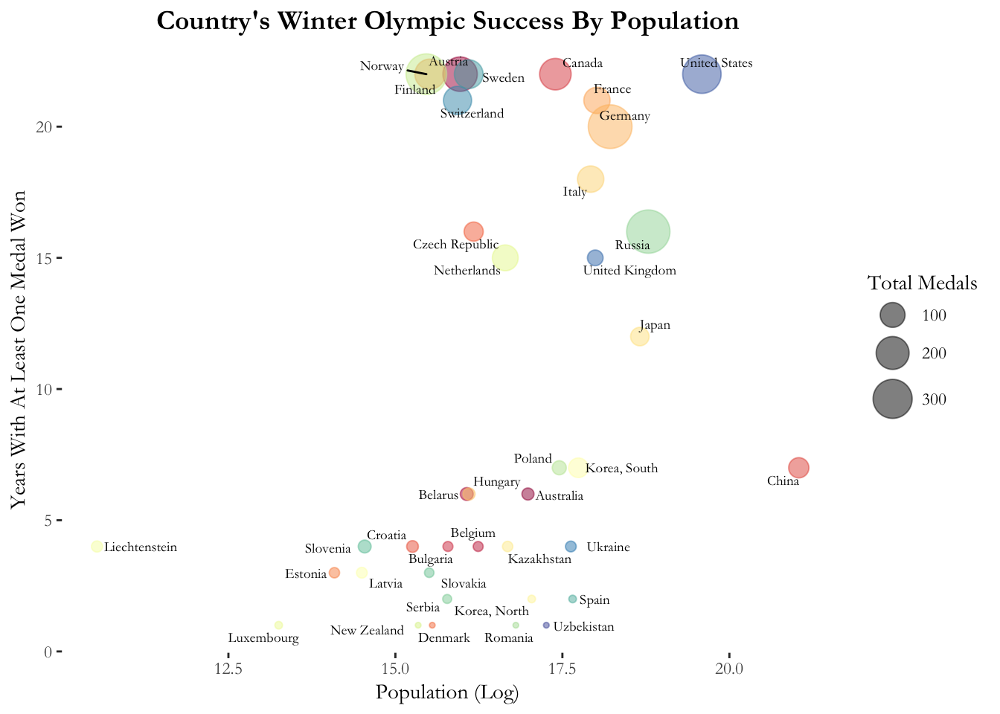
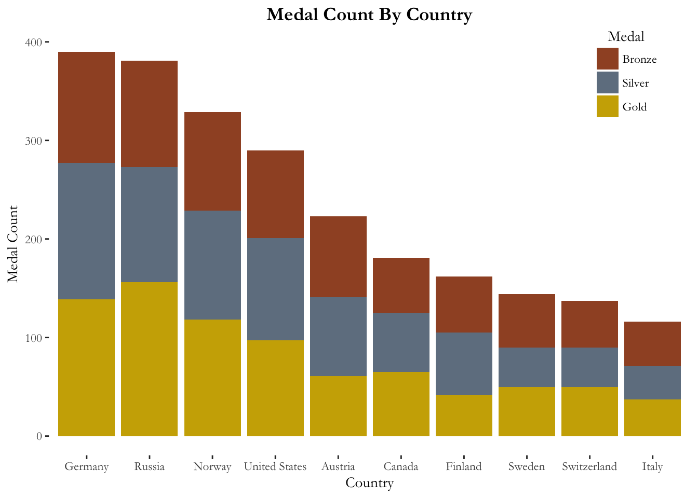
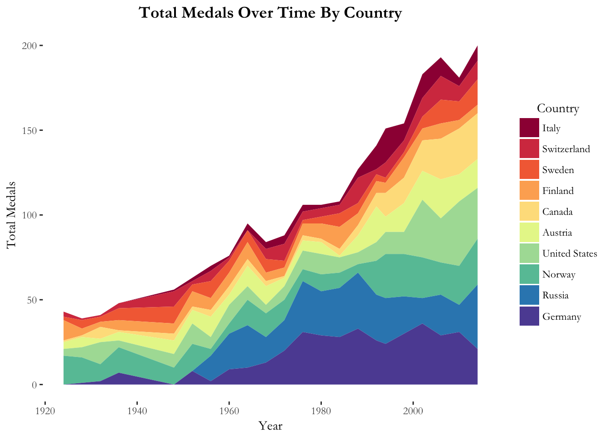
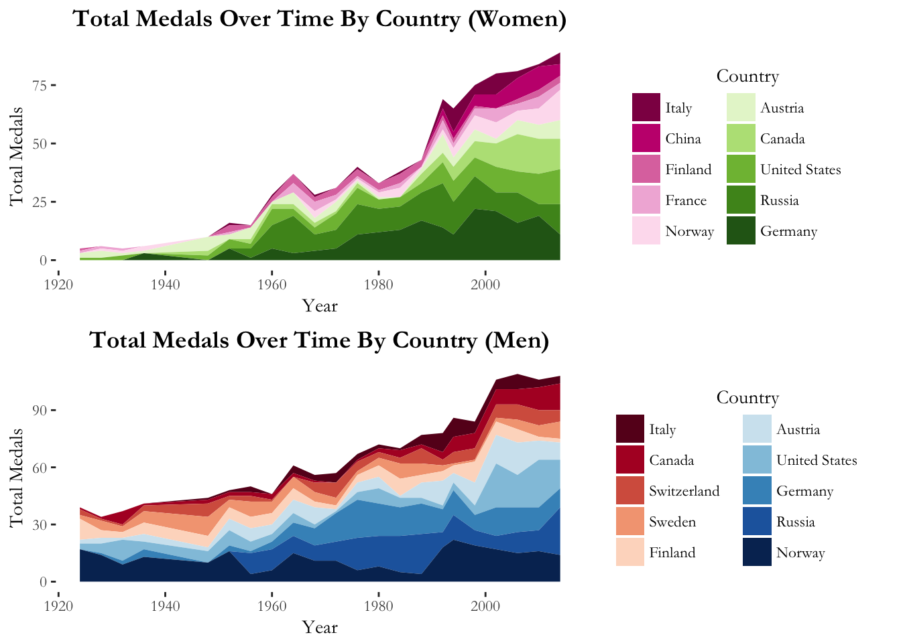
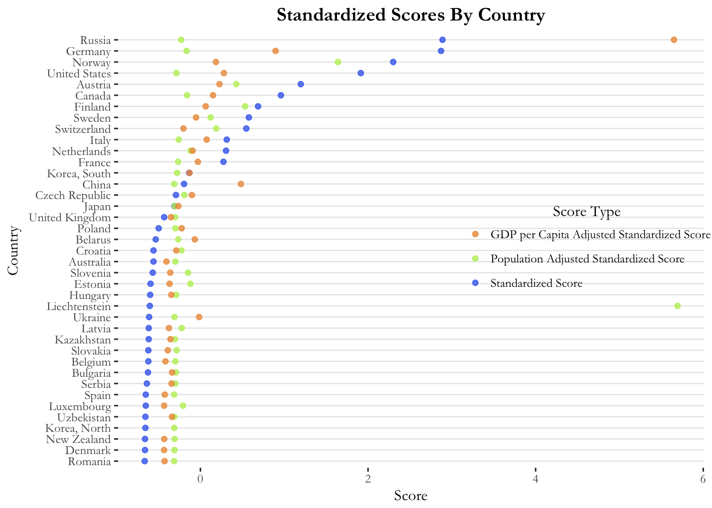
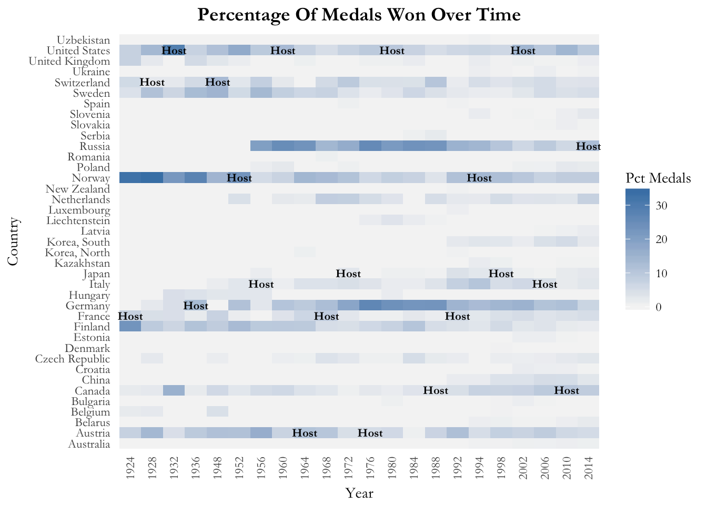
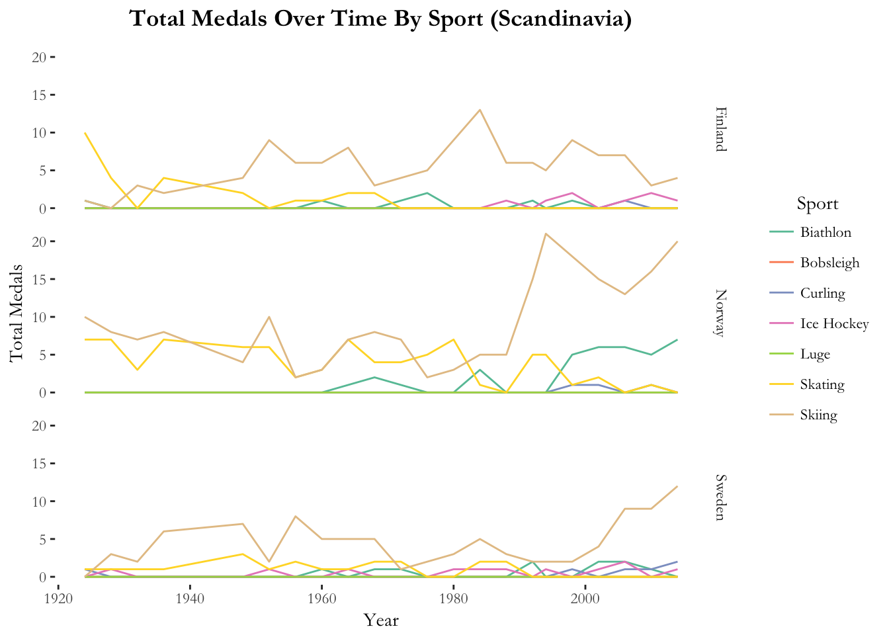
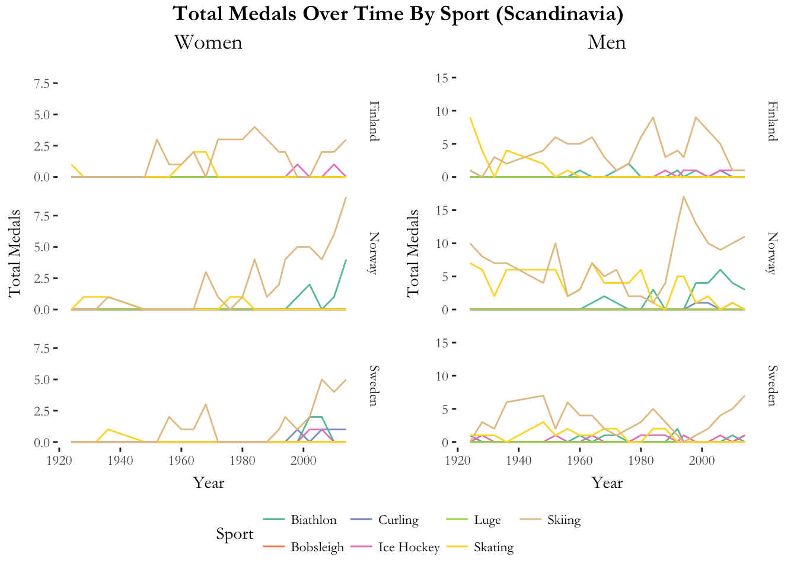
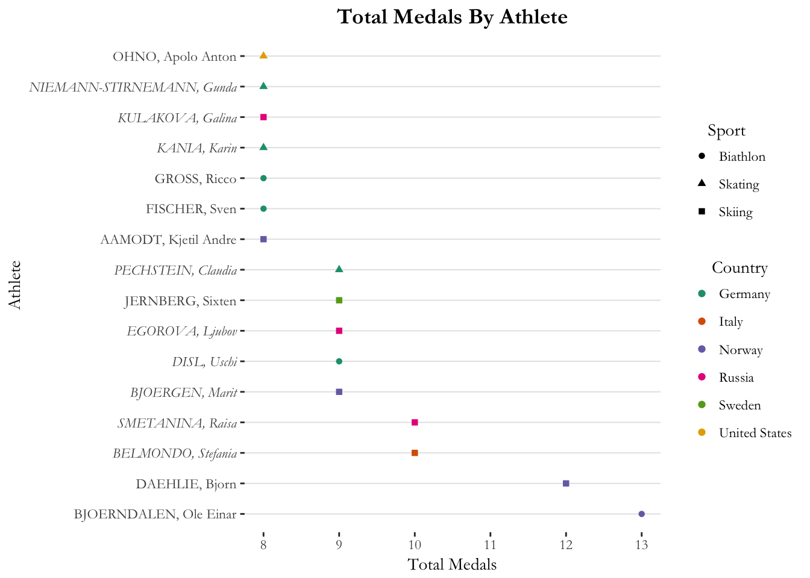

I first provide some brief explanations of the data wrangling that was done on the dataset:
To ensure medals in team sports were only counted once, I only counted “unique” medals in the medal tally. To count, the medal must be unique in year, discipline, event, medal type and gender.
To ensure smoothness of my time-series graphs, I needed to remove breaks in the data for any countries in any years. Hence, in years where no medals were recorded, I recoded that as meaning there were 0 medals.
The first task required me to calculate and visualise a summary of how many winter Olympics each country medaled in. I chose to use a Bubble Chart for this visualisation. The advantage of this bubble chart is that it enables me to observe the relationships between a country’s logged population (the x axis), the number of years a country medaled in (the y axis) and the total number of medals (the size of the bubbles).
The visualisation reveals that there is a generally positive relationship between a country’s population and both the number of years it has medaled and the total number of medals, as exemplified by the large bubbles of the United States, Germany and Russia on the top-right of the chart. This is unsurprising considering that large countries have a larger pool talent to draw from. Yet, there is also a significant few countries at the top middle of the chart that also have large bubbles, namely Norway, Finland and Sweden. These countries have mid-sized populations, but can excel in the winter Olympics because they have much experience with winter sports in Scandinavia. By contrast, China at the middle right of the chart has a large population, but has not had as much winter Olympic success. Our visualisation also reveals the interesting case of France. Although France may not be considered conventionally successful because it does not have many total medals to its name as evident by its small bubble, it is certainly a consistent contender because it has medaled in almost all the Winter Olympics.

The second task required me to calculate how many medals of each type each country won. I chose to use a Stacked Bar Chart for this visualisation and limited it to the top ten countries because I felt this made the visualisation most meaningful.
The visualisation reveals Germany to have been most successful at the Winter Olympics. It has the highest total number of medals. However, Russia is not far behind and if we were to look at the number of gold medals, Russia in fact slightly edges out Germany. Despite its smaller size, Norway has managed third position. If we were to look at all top 10 countries, we would notice that they are all from temperate regions, which is to be expected as such countries will have more experience with winter sports.

The next task required me to visualise the change in the medal count over time. I chose to use a Stacked Area Chart for this visualisation and again limited it to the top ten countries. The stacked area chart has the advantage over the line chart in that it not only reveals how the medal count of each country changed over time, but it also reveals how the total medal count of these countries has changed over time and how the proportion of each country’s medal count has changed over time.
The first takeaway from the visualisation is that the total number of medals have increased exponentially from 1920 to present day, which should probably be expected considering how the number of Winter Olympic events have grown. The chart also reveals that Norway was the most dominant player from the 1920s to 1950s, but it was then replaced by Germany and Russia from 1970s to the 1990s. Since the 1990s, the United States, Canada and Norway (again) have had an increasing share of the Winter Olympic Medals. In 2014, the proportion of medals between the top 10 countries is far more evenly distributed. We also notice that some countries have been far more consistent than others: Finland, the United States and Norway have won a proportion of medals since the 1920s, but Russia only started winning medals in the 1950s and Canada only started becoming a real contender in the 1980s.

My final task in Part 1 was to consider gender in my visualisation. The first thing I notice from the visualisation is that the increase in the total number of medals is far more exponential for women than men. This suggests that there were few women’s events in the early 20th century and that it is a recent phenomenon that women are taking part in Winter sports. Next, it is interesting that the top ten countries are different for women and for men. France and China are in the top ten countries for women’s medals and Switzerland and Sweden are in the top ten countries for men’s medals. Turning to the country trends over time by gender, we notice in the women’s chart that the dominant players have largely been Germany and Russia, with the distribution of medals only becoming more even between Germany, Russia, the United States and Canada the 2000s. By contrast, in the men’s chart, Germany and Russia were only dominant from the 1970s to 1990s. Before the 1970s, the dominant player was Norway and after the 1990s, the distribution of medals were more even between Norway, Russia, Germany, the United States and Austria.

From the discussion of all the visualisations above, I would recommend the visualisation of Total Medals Over Time By Country (Part 1c). This visualisation is functional and aesthetic, and as I had already explained in Part 1c, it is packed with information that can allow for further exploration beyond simply the trend of a country’s medal count over time. Yet this visualisation is also simple and easy to navigate. This makes it preferable to the much more complex visualisation of Total Medals Over Time By Country and Gender (Part 1d).
The task in Part 2 required me to visualise different ways of measuring a country’s overall success in the Winter Olympics. I decided to measure success in these three ways: 1. By calculating an Olympic Score by assigning three points for every Gold, two points for every Silver and one point for every Bronze. Such a method was chosen because it not only gives credit to every medal won, but also deservingly gives more credit for Gold and Silver medals. 2. Dividing the Olympic Score by total population to obtain a Population-Adjusted Olympic Score 3. Dividing the Olympic Score by GDP per Capita to obtain a GDP per Capita-Adjusted Olympic Score
The scores were all then standardised using the ‘scale’ function, which subtracted the scores by their means and then divided by their standard deviation. Standardisation was done so that all three scores could be compared with each other. I then chose to use a Dot Chart for the visualisation of the standardised scores. The dot chart has the advantage of elegantly displaying all three scores on the same axis for each country.
From the visualisation, we notice that Russia and Germany are neck in neck with the highest raw standardised scores. However, once we consider GDP per Capita adjustment, Russia is then considered to perform far better than Germany. Russia is therefore pulling way above its weight in the Olympics for its level of economic development. Another highly surprising result is Liechtenstein, a country which seems to be the hidden star of the Winter Olympics. Liechtenstein has a less-than-average raw standardised score below 0. However, Liechtenstein also has a very small population. Hence, its population-adjusted standardised score is extraordinarily high above 5, which is much higher than its nearest competitor (Norway).

Part 3 required me to visualise a host country advantage (or lack thereof). I chose to use a Heat Map for this visualisation. A heat map quickly reveals how the performance of each country differs from year to year and hence we can observe whether being a host nation in a particular year results in better performance both compared to other countries in that year, and also compared to the given country other years. Unlike in the previous visualisations, my dependent variable for this heat map is the percentage of medals a country won in each year, rather than the raw total. This is to control for the fact that the total number of medals available to be won have increased over time.
The visualisation reveals mixed results. For some countries in some years, there was a host nation advantage, but this was by no means a consistent trend. For instance, the year when the United States won their highest percentage of medals ever was in 1932, when they were the host nation. Yet, the United States also performed averagely for other years when they were the host nation (1960, 1980, 2002). Similarly, Switzerland performed well in 1948 when they were the host nation, but did not do as well in 1928 when they were also the host nation. Interestingly, in the years when Germany and Russia performed the best (1970s-1990s), they were not the host nation for any of the games.

In Part 4, I had to visualise a country’s success in particular sports. For this task, I chose to focus on the Scandinavian countries because they were small countries that have performed exceptionally well at the Winter Olympics. For simplicity, I also chose to focus on Sport, rather than Discipline or Event. I chose to use a Line Graph for this visualisation, but faceted the graphs by country. The advantage of the line graph is that it enables us to quickly see the changes in a country’s success in each sport over time.
From the visualisation, the first thing we notice is that the Scandinavians are not good at all Winter Sports. In fact, they have had no medals in the Luge or in Bobsleigh at all in any year. Across all three countries, their best sport is skiing, where they have won the most medals consistently over time. Norway in particular has become extraordinarily good at skiing since the 1990s. All countries used to be good at skating in the 20th century (in fact Norway was as good in skating as in skiing up to the 1980s), but their success in this sport has diminished in recent years. Each of the countries also have their own specialisation in recent years. For instance, Norway is good at the biathlon and Finland is good at ice hockey. Sweden seems to be the jack of all trades with a few medals that are evenly distributed between biathlon, ice hockey and curling.

I then decided to extend my previous visualisation to look at variation by gender. Again, we see interesting trends. First, we notice that the Scandinavian’s success in skating and skiing in the 20th century was driven almost entirely by their male athletes. Their female athletes only started winning medals consistently from the 1970s onwards (and for Sweden only from the 1990s!).The female athletes are also less diverse in their medals won, with most coming from Skiing. By contrast, the male athletes have won medals from more kinds of sports such as ice hockey, biathlon and curling.

In Part 5, the task was to visualise the most successful athletes of all time (i.e. the athletes that have won the most overall medals). I chose to use a Dot Chart for the visualisation and limited it to the top ten athletes of all time. The final visualisation has more than ten athletes listed, however, because rank number ten is tied between 7 people. The dot chart was preferred because I could differentiate the shape and the colour of the dots to reveal country and sport specialisation of each athlete. Moreover, by italicising the axes, I could also indicate the gender of each athlete. Hence, I am able to convey much information in a relatively simple and elegant manner.
From the visualisation, we notice that the top two athletes are Norwegian (purple colours) and are males. The top athlete participated in the biathlon and the second top athlete was a skiier. Overall, the top athletes all only participated in three sports: biathlon, skiing and skating, and only come from six countries: Germany, Norway, Russia, Sweden, Italy and the United States (though Italy and the United States are only represented by one athlete each). It is also interesting that most of the top athletes (9 out of 16) are female.

The task in Part 6 required me to choose two visualisations to make interactive and to explain my choices.
The first visualisation I chose was the heat map visualising host nation advantage in Part 3. I chose to make this map interactive because I believe there is much information to be explored in this map, which is not immediately obvious in a static map. For instance, with an interactive heatmap, by moving the cursor over to the tile representing a specific year and country, the user can now find out the exact percentage of medals the country won for that year. Such precise information cannot be conveyed through the colour graduation of the tiles in a static graph.
The second visualisation I chose was the line graph visualising the Scandinavian’s total medals over time by sport in Part 4a. I chose to make this map interactive because I the user can use the interactive tools to find out interesting trends. For instance, the user can click on different sports in the legend to focus on the relationship between specific sports over time. The user can also move the cursor over the different lines to see how the precise total medal count for each sport has changed over timer. The user can further zoom into parts of the line graph that may appear rather cluttered on first sight to find out more about the trends in those particular years.
The final task of the assignment required me to make a datatable interactive.
Of all the dataframes I have created, I chose to make my wide date frame, which lists the all time medal count of each country, interactive. This data frame also has information on the country’s medal county by type, its population, its GDP per capita, its Olympic Score (and standardised and adjusted variants) and the number of years it has medaled. I chose to include these information because I think they give a good overall snapshot of a country’s success at the Winter Olympics, which is probably the information most users want. Including the Olympic Scores and its variants enables the user to judge each country’s overall success on different criteria. The datatable has sorting and search functions for added convenience.